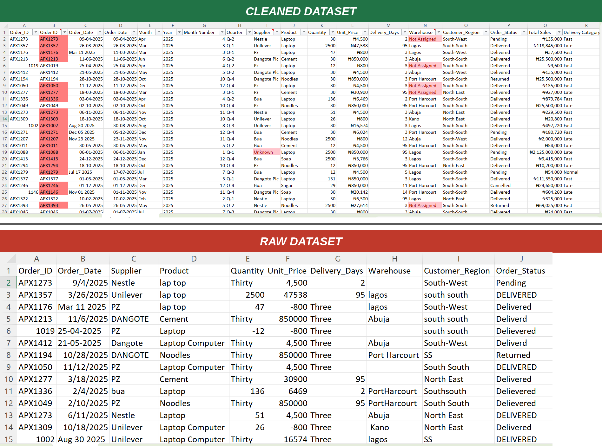
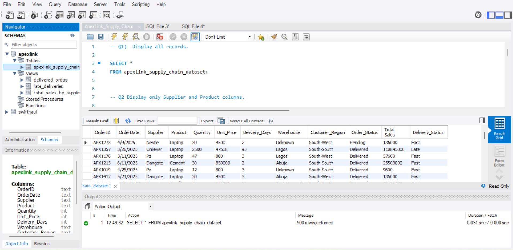
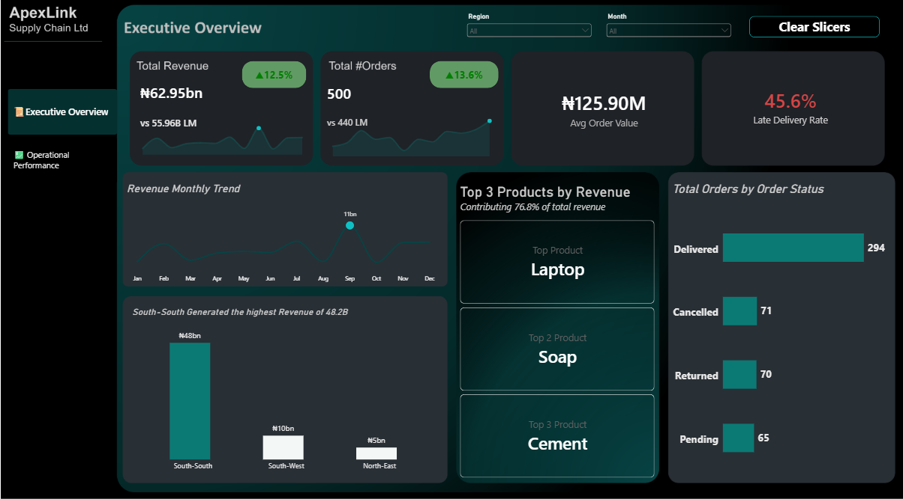

Understanding supply-chain performance
This project analyses a fictional supply-chain dataset containing 500 orders to understand sales, supplier performance, delivery delays, cancellations and returns.
The analysis was designed to move beyond reporting sales figures and identify operational patterns that could affect delivery performance, supplier management and inventory decisions.
Orders Analysed
500 orders.
Sales
Approximately ₦62.95 billion in recorded sales.
Main Focus
Delivery performance, suppliers, products, cancellations and returns.
Tools
Excel, SQL and Power BI.
What did the analysis try to answer?
Preparing the supply-chain data
The raw operational data was reviewed, cleaned and structured before analysis. This included checking missing supplier information, standardising fields, reviewing order status and preparing the data for analysis in Power BI.
Data quality was treated as part of the analysis rather than something separate from it, because incomplete supplier information can affect how operational performance is interpreted.
From raw data to business insights
SQL Analysis with MySQL
MySQL was used to query the cleaned dataset, investigate operational patterns and answer key supply-chain questions before the results were presented in Power BI.

MySQL queries used to analyse the cleaned ApexLink supply-chain data.
Supply Chain Performance Dashboard
The Power BI dashboard brings sales, delivery, supplier and inventory-related metrics together to provide a view of supply-chain performance.

ApexLink Power BI dashboard showing sales, delivery performance, supplier activity, and inventory patterns across the business.
What the analysis revealed
Nearly half of the analysed orders were recorded as late deliveries.
The average delivery duration across the analysed orders.
141 of the 500 orders were cancelled or returned.
South-South contributed the largest share of recorded regional revenue.
Where the pressure points appeared
The Port Harcourt + Dangote lane recorded an average delivery time of 35 days, indicating a route requiring closer operational review.
Dangote accounted for 72 of the 228 late orders and approximately 33.0% of recorded revenue.
Approximately ₦11 billion, or 17.5% of recorded supplier value, was associated with missing or unknown supplier information.
Laptop, Soap and Cement together accounted for approximately 76.8% of recorded revenue, highlighting a concentration of sales across a small group of products.
What could the business investigate next?
Review routes with consistently longer delivery times to understand whether logistics, supplier or geographic factors are contributing to delays.
Strengthen supplier data capture and validation so operational performance can be attributed accurately.
Monitor the products contributing the largest share of revenue and assess the operational risks associated with relying heavily on a small product group.
Investigate the reasons behind cancelled and returned orders, particularly where these events are concentrated by product, supplier or delivery route.
Tools used
Explore the project
The complete project documentation and supporting files are available through the project repository.